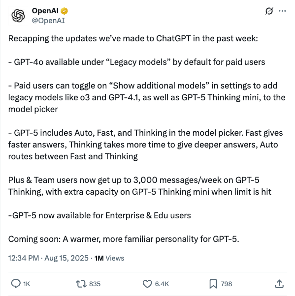
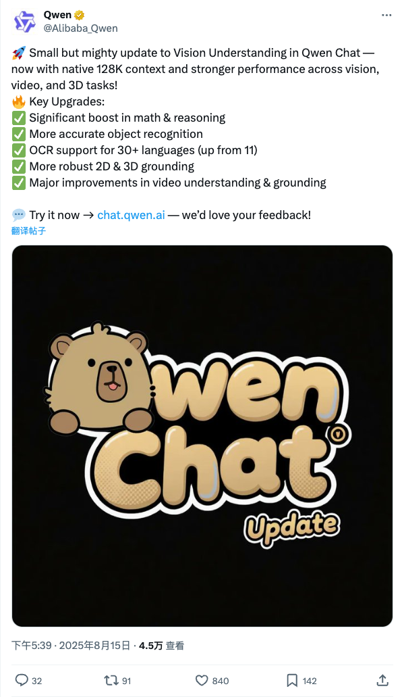
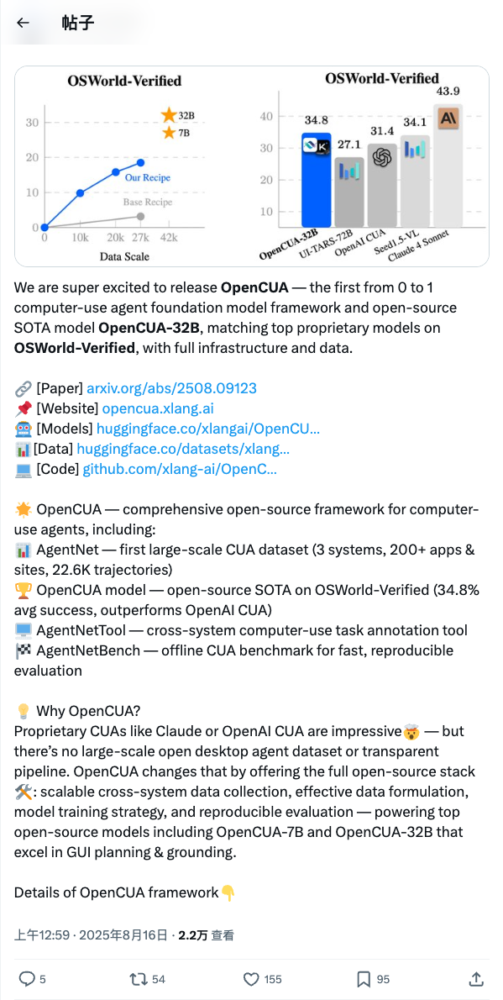
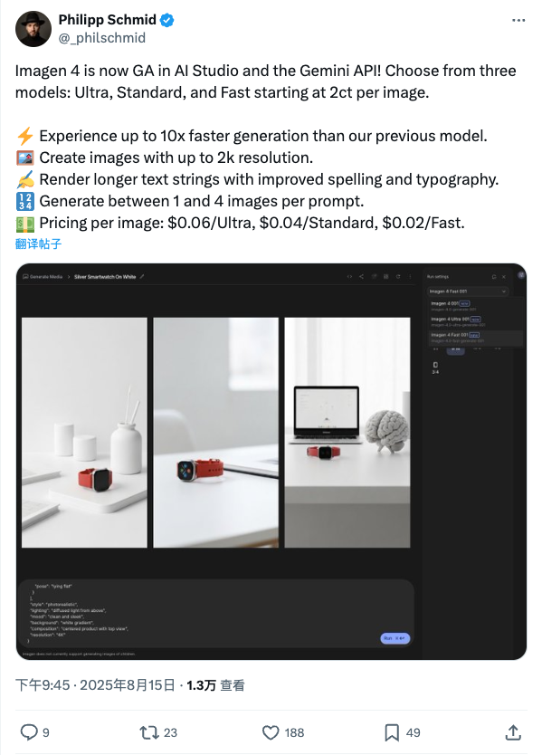
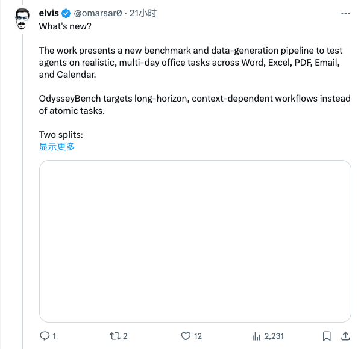
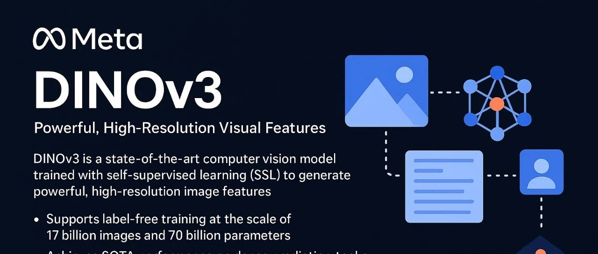

Twitter
latentspacepod_Greg Brockman谈OpenAI未来、GPT-5与通用人工智能
发布时间: 2025-08-15T19:10:06.000Z

Latent.Space播客采访OpenAI总裁Greg Brockman，深入探讨GPT-5时代、模型智能评估、计算扩展及通用人工智能发展路径。他强调“能量转化为计算，计算转化为智能”，并分享了OpenAI在推理演进、在线/离线学习、模型路由、定价优化及自改进智能体方面的进展。此次对话揭示了OpenAI对未来AI研究和工程的愿景，以及对AGI时代工程师价值的思考。
OpenAI_ChatGPT周更新：GPT-4o与GPT-5功能及可用性拓展
发布时间: 2025-08-15T04:34:03.000Z

OpenAI发布ChatGPT最新周更新，主要包括GPT-4o默认对付费用户开放，并允许付费用户启用更多旧模型及GPT-5 Thinking mini。GPT-5引入Auto、Fast、Thinking三种模式，提供不同响应速度和深度。Plus及团队用户现可享每周3000条GPT-5 Thinking消息额度。此外，GPT-5已面向企业和教育用户推出，未来将拥有更人性化的个性。
Alibaba_Qwen_通义千问视觉理解能力重大升级
发布时间: 2025-08-15T09:39:03.000Z

通义千问（Qwen Chat）的视觉理解能力获得重大更新，现已支持原生128K上下文，并在视觉、视频和3D任务中展现出更强的性能。此次升级显著提升了数学与推理能力，优化了物体识别准确性，将OCR支持语言扩展至30多种，并增强了2D和3D的接地能力，同时在视频理解方面也有显著改进。
xywang626_OpenCUA：首个开源计算机使用智能体基础模型框架发布
发布时间: 2025-08-15T16:59:39.000Z

Xinyuan Wang团队发布OpenCUA，首个从零到一的开源计算机使用智能体基础模型框架，并开源SOTA模型OpenCUA-32B。该框架在OSWorld-Verified基准上表现与顶尖专有模型相当，提供完整开源基础设施和数据。OpenCUA旨在解决大型开放桌面智能体数据集和透明管道缺失问题，提供数据收集、制定、模型训练及评估的全栈解决方案。
_philschmid_Imagen 4正式发布，性能提升且定价公布
发布时间: 2025-08-15T13:45:56.000Z

Philipp Schmid宣布Imagen 4现已在AI Studio和Gemini API中全面可用。该服务提供Ultra、Standard和Fast三种模型，起价每张图片0.02美元。Imagen 4的生成速度比前代模型快10倍，支持高达2K分辨率的图像输出，并显著提升了长文本字符串的拼写和排版质量。用户每次提示可生成1到4张图片，定价分别为Ultra 0.06美元、Standard 0.04美元、Fast 0.02美元。
omarsar0_OdysseyBench：多日办公任务AI智能体基准测试
发布时间: 2025-08-15T12:03:07.000Z

omarsar0团队推出OdysseyBench，这是一个全新的基准测试和数据生成管道，旨在评估AI智能体在真实、多日的办公任务中的表现。该基准测试涵盖Word、Excel、PDF、电子邮件和日历等应用，专注于测试智能体的长周期、上下文依赖型工作流程，而非单一原子任务，为智能体在复杂办公环境下的能力评估提供了新范式。
wechat
DINOv3来了！70亿参数+17亿图像，自监督学习迈向新里程碑
发布时间: 2025-08-15T01:13:45.000Z

Meta发布DINOv3，作为最先进的自监督学习计算机视觉模型，其将无监督训练扩展至70亿参数和17亿图像数据集，首次实现单一冻结视觉骨干网络在多项密集预测任务上超越专用方案。DINOv3受大型语言模型启发，通过扩大模型容量和数据规模，并引入Gram Anchoring方法解决训练中密集任务性能下降问题，同时支持高分辨率适配。该模型首次证明自监督学习能广泛超越弱监督模型，并在图像分类和密集预测任务上表现卓越，已在森林监测等实际应用中展现价值，标志着自监督学习迈向新里程碑。
谷歌开源Gemma 3 270M，性能超越Qwen 2.5同级模型
发布时间: 2025-08-15T04:14:53.000Z

谷歌正式发布了Gemma 3 270M，这是一款参数量仅2.7亿的紧凑型语言模型，专为特定任务微调设计。该模型继承了Gemma 3系列的先进架构，具备强大的指令跟踪和文本结构化能力，并在IFEval基准测试中展现出超越同级模型的性能。其核心优势包括极致节能（Pixel 9 Pro上25次对话仅耗电0.75%）、支持生产级INT4量化、以及出色的指令遵循能力。Gemma 3 270M旨在赋能开发者构建高效、低成本、可离线运行的专业化AI系统，尤其适用于高容量、低延迟、注重隐私和快速迭代的场景，推动小型专业模型的广泛应用。
文生视频提速 14 倍还更清晰？浙大&华为开源Video-BLADE，让 DiT 秒变“极速引擎”
发布时间: 2025-08-15T16:19:53.000Z
浙大与华为联合开源的Video-BLADE框架，通过将自适应块稀疏注意力（ASA）与无数据轨迹分布匹配（TDM）蒸馏流程协同设计，显著提升了视频扩散模型的推理效率。该框架使DiT模型实现高达14倍的加速，同时在VBench-2.0基准测试中展现出超越传统密集基线的生成质量，甚至在某些指标上有所提升。Video-BLADE的核心在于动态剪枝注意力矩阵以聚焦关键时空交互，并通过分布级对齐确保学生模型高效学习教师模型的生成轨迹，从而在保持高感知质量的同时大幅降低计算成本，为高效视频生成提供了新范式。
无限长、零掉帧！StableAvatar口型同步全新技术
发布时间: 2025-08-15T13:44:57.000Z
复旦大学提出StableAvatar，首个端到端视频扩散Transformer，旨在解决现有音频驱动头像视频生成模型在合成长视频时音频同步与身份一致性难以保持的问题。StableAvatar通过时间步感知音频适配器、音频原生引导机制及动态加权滑动窗口策略，有效抑制误差积累，提升音画同步与视频平滑度，实现无限长度高质量视频生成。相比竞品，其显存减少约50%，推理速度提升10倍，并在面部质量和唇形同步上表现卓越，展现了在长时头像视频生成领域的显著优势。
首个开源多模态Deep Research智能体，超越多个闭源方案
发布时间: 2025-08-15T06:41:05.000Z
WebWatcher作为首个开源多模态深度研究智能体，通过整合网页浏览、图像搜索、代码解释器等多种工具，实现了全自动高质量推理轨迹生成，并结合监督微调与强化学习优化决策。该智能体旨在解决跨模态、跨工具、多步骤的复杂任务，其技术方案涵盖高难度数据构建、推理轨迹优化及强化学习。在BrowseComp-VL等高难度基准测试中，WebWatcher在复杂推理、信息检索、知识整合及信息聚合方面全面超越GPT-4o、Gemini等主流闭源模型，奠定了新一代开源多模态智能体的领先地位。
GPT-5超越人类医生！推理能力比专家高出24%，理解力强29%
发布时间: 2025-08-15T06:41:05.000Z
最新研究显示，GPT-5在医学影像推理和理解方面表现卓越，准确率分别比人类专家高出24.23%和29.40%。该模型在USMLE、MedXpertQA和VQA-RAD等多项标准化医学测试中全面超越GPT-4o及其他变体。其核心能力提升源于从文本主导到原生多模态深度融合的架构转变，通过共享标记化技术和跨模态注意力机制，实现信息无缝处理。尽管GPT-5在理想测试环境下表现出色，研究人员强调其在真实临床场景中的应用仍需更多实践验证，目前在复杂、未见过的真实病例处理上，AI模型仍落后于经验丰富的放射科医生。
huggingface
We-Math 2.0：一个用于激励视觉数学推理的多功能数学手册系统
发布时间: 2025-08-14T08:15:41.000Z

多模态大型语言模型（MLLM）在各种任务中展现出令人印象深刻的能力，但在复杂的数学推理方面仍面临挑战。现有研究主要集中在数据集构建和方法优化上，却常常忽视两个关键方面：全面的知识驱动设计和以模型为中心的数据空间建模。在本文中，我们介绍了 We-Math 2.0，这是一个统一的系统，它集成了结构化数学知识系统、以模型为中心的数据空间建模以及基于强化学习（RL）的训练范式，旨在全面提升 MLLM 的数学推理能力。We-Math 2.0 的主要贡献有四方面：(1) MathBook 知识系统：我们构建了一个五级分层系统，包含 491 个知识点和 1,819 条基本原理。(2) MathBook-Standard & Pro：我们开发了 MathBook-Standard，一个通过双重扩展确保广泛概念覆盖和灵活性的数据集。此外，我们定义了一个三维难度空间，并为每个问题生成 7 个渐进变体，以构建 MathBook-Pro，这是一个用于鲁棒训练的挑战性数据集。(3) MathBook-RL：我们提出了一个两阶段的强化学习框架，包括：(i) 冷启动微调，使模型与知识导向的思维链推理对齐；以及 (ii) 渐进对齐强化学习，利用平均奖励学习和动态数据调度实现跨难度级别的渐进对齐。(4) MathBookEval：我们引入了一个全面的基准测试，涵盖所有 491 个知识点，并具有多样化的推理步骤分布。实验结果表明，MathBook-RL 在四个广泛使用的基准测试上与现有基线表现相当，并在 MathBookEval 上取得了优异成绩，这表明其在数学推理方面具有良好的泛化能力。
NextStep-1：迈向基于连续令牌的大规模自回归图像生成
发布时间: 2025-08-14T14:54:22.000Z

当前主流的文本到图像生成自回归（AR）模型，要么依赖于计算密集型的大型扩散模型来处理连续图像令牌，要么采用向量量化（VQ）以获得具有量化损失的离散令牌。在本文中，我们通过NextStep-1推动了自回归范式的发展。NextStep-1是一个14B的自回归模型，搭配一个157M的流匹配头部，通过下一令牌预测目标在离散文本令牌和连续图像令牌上进行训练。NextStep-1在文本到图像生成任务中为自回归模型取得了最先进的性能，在高保真图像合成方面展现出强大的能力。此外，我们的方法在图像编辑方面也表现出色，突显了我们统一方法的强大功能和多功能性。为了促进开放研究，我们将向社区发布我们的代码和模型。
ToonComposer：通过生成式关键帧后处理简化卡通制作
发布时间: 2025-08-14T17:50:11.000Z

传统的卡通和动漫制作涉及关键帧绘制、中间帧生成和上色阶段，这些阶段需要大量的人工投入。尽管人工智能取得了最新进展，但现有方法通常单独处理这些阶段，导致错误累积和伪影。例如，中间帧生成方法难以处理大幅度运动，而上色方法需要密集的逐帧草图。为了解决这个问题，我们引入了 ToonComposer，一个将中间帧生成和上色统一到单个关键帧后处理阶段的生成模型。ToonComposer 采用稀疏草图注入机制，利用关键帧草图提供精确控制。此外，它使用一种卡通适应方法，结合空间低秩适配器，将现代视频基础模型调整到卡通领域，同时保持其时间先验不变。ToonComposer 仅需少量输入，例如单个草图和彩色参考帧，即可表现出色，同时还支持在任何时间位置使用多个草图以实现更精确的运动控制。这种双重能力减少了人工工作量并提高了灵活性，赋能艺术家在实际场景中的应用。为了评估我们的模型，我们进一步创建了 PKBench，一个包含手绘草图的基准，模拟了真实世界的使用案例。我们的评估表明，ToonComposer 在视觉质量、运动一致性和生产效率方面优于现有方法，为人工智能辅助的卡通制作提供了一种卓越且更灵活的解决方案。
PRELUDE：一个旨在要求对长上下文进行全局理解和推理的基准
发布时间: 2025-08-13T14:28:25.000Z

我们引入了PRELUDE，这是一个通过判断角色前传故事是否与原著的规范叙事一致的任务，来评估长上下文理解能力的基准。与现有基准相比，我们的任务对全局理解和深度推理提出了更高的要求——由于前传并非原始故事的一部分，评估其合理性通常需要搜索和整合间接相关的信息。经验表明，88%的实例需要来自叙事多个部分的证据。实验结果突显了我们任务的挑战性：最先进的大型语言模型（LLMs）的上下文学习、RAG和域内训练，以及商业DeepResearch服务，在性能上落后于人类超过15%。进一步的人类研究表明，模型常以有缺陷的推理得出正确答案，导致推理准确性与人类相比存在超过30%的差距。这些发现强调了长上下文理解和推理方面仍有巨大的改进空间。
UI-Venus 技术报告：使用 RFT 构建高性能 UI 智能体
发布时间: 2025-08-14T16:58:07.000Z

我们提出了 UI-Venus，一个基于多模态大语言模型、仅以屏幕截图作为输入的原生 UI 智能体。UI-Venus 通过基于 Qwen2.5-VL 的强化微调（RFT），仅使用数十万高质量训练样本，就在 UI 接地和导航任务上取得了最先进（SOTA）的性能。具体而言，UI-Venus 的 7B 和 72B 变体在标准接地基准测试（即 Screenspot-V2 / Pro）上分别达到了 94.1% / 50.8% 和 95.3% / 61.9% 的性能，超越了包括开源 GTA1 和闭源 UI-TARS-1.5 在内的先前 SOTA 基线。为了展示 UI-Venus 的总结和规划能力，我们还在在线 UI 导航平台 AndroidWorld 上对其进行了评估，我们的 7B 和 72B 变体在此平台上分别取得了 49.1% 和 65.9% 的成功率，同样超越了现有模型。为实现这一目标，我们为 UI 接地和导航任务引入了精心设计的奖励函数以及相应的有效数据清洗策略。为了进一步提升导航性能，我们提出了自演化轨迹历史对齐与稀疏动作增强（Self-Evolving Trajectory History Alignment & Sparse Action Enhancement）方法，该方法能够优化历史推理轨迹并平衡稀疏但关键动作的分布，从而在复杂的 UI 任务中实现更连贯的规划和更好的泛化能力。我们的贡献包括发布了 SOTA 开源 UI 智能体、全面的数据清洗协议以及一个用于提升导航性能的新型自演化框架，这些将鼓励社区进行进一步的研究和开发。代码可在 https://github.com/antgroup/UI-Venus 获取。
扩散语言模型综述
发布时间: 2025-08-14T17:47:22.000Z

扩散语言模型（DLM）正迅速崛起，成为主导的自回归（AR）范式的一种强大且有前景的替代方案。通过迭代去噪过程并行生成词元，DLM在降低推理延迟和捕获双向上下文方面具有固有优势，从而能够对生成过程进行细粒度控制。在实现数倍加速的同时，最新进展已使DLM展现出与自回归模型相当的性能，使其成为各种自然语言处理任务的引人注目的选择。在本综述中，我们对当前DLM的整体格局进行了全面概述。我们追溯了其演变以及与其他范式（如自回归和掩码语言模型）的关系，并涵盖了基础原理和最先进的模型。我们的工作提供了一个最新的、全面的分类法，并深入分析了当前的技术，从预训练策略到高级后训练方法。本综述的另一个贡献是对DLM推理策略和优化进行了全面回顾，包括解码并行性、缓存机制和生成质量的改进。我们还重点介绍了DLM多模态扩展的最新方法，并阐述了它们在各种实际场景中的应用。此外，我们的讨论还探讨了DLM的局限性和挑战，包括效率、长序列处理和基础设施要求，并概述了未来研究方向，以维持这一快速发展领域的进步。项目GitHub地址：https://github.com/VILA-Lab/Awesome-DLMs。